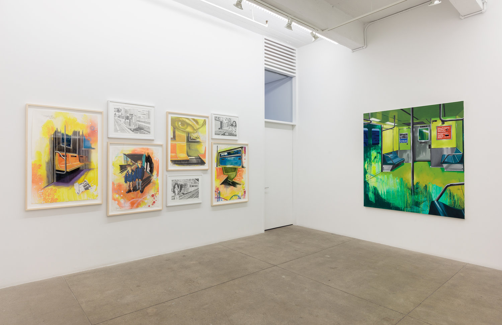
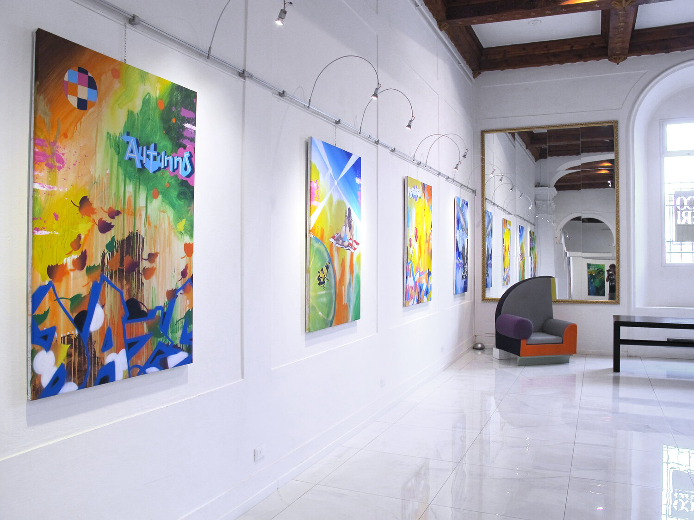
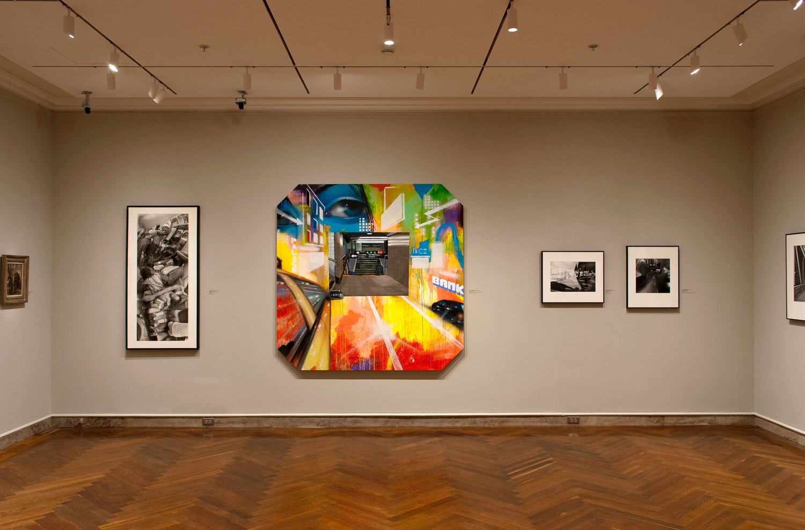

Chris Daze Ellis was born in New York City in 1962. He started his career in the subway cars of NYC fourteen years later, in 1976, while going to The High School of Art and Design. One of the most influential facts about him is that he is one of the few
artists of his generation to make the transition from subways to sudios successfully.
Quick Timeline from 1981 (The Start of his Success)
In 1981, his first group show, was the seminal “Beyond Words” at the Mudd Club in TriBeCa.
Soon after, his first solo exhibition was held at Fashion Moda, an influential alternative art space in the South Bronx.
One year later, the Sammlung Ludwig, a museum for modern art in Aachen, Germany acquired the first of several paintings for their permanent collection.
Notable Solo Exhibitions:
PPOW Gallery, New York, 2018.
Galleria del Palazzo, Florence, Italy, 1998.
Addison Gallery of American Art at The Phillips Academy, Andover, Massachusetts, 2014.



Ellis also has participated in multiple public art projects such as:
Painting a mural for The Star Ferry Terminal in Hong Kong in 1993.
He was an art consultant for Biz Luhrman’s Netflix series,”The Get Down”, in 2017.
And was also commissioned to create a mural for the law firm, Cleary, Gottlieb, Steen & Hamilton, in Washington DC, 2018.
Where Can you Find his Work Now?
His work can now be found in the permanent collections of:
The Whitney Museum, New York.
Museum of Modern Art, New York.
The Museum of the City of New York.
The Ludwig Museum, Aachen, Germany.
Yale University Art Gallery, New Haven, Connecticut.
Addison Museum of American Art at the Phillips Academy, Andover, Massachusetts.
Where is he Living Now?
Chris Daze Ellis both works and lives in New York City.